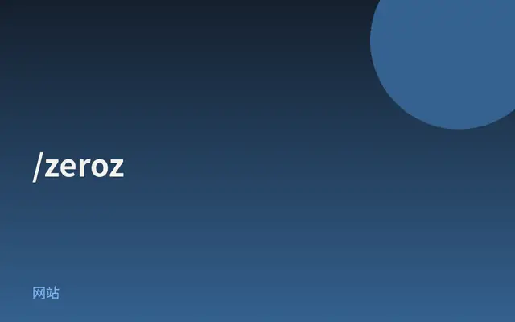
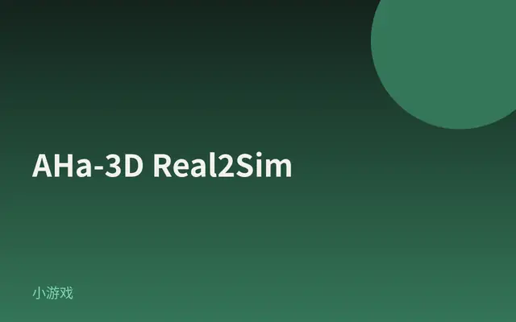
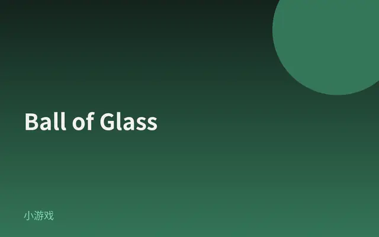
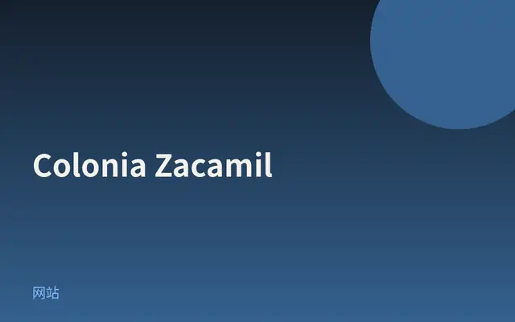
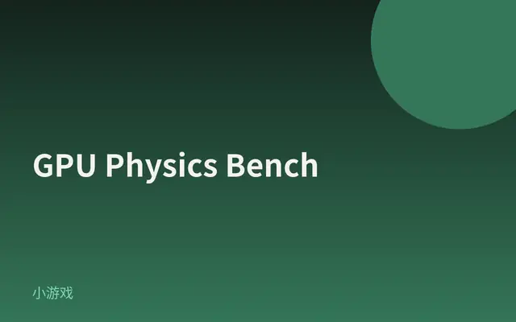
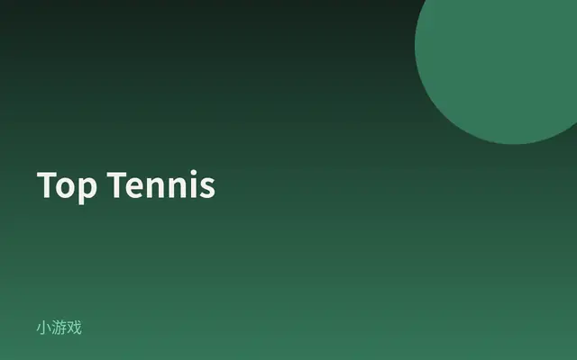
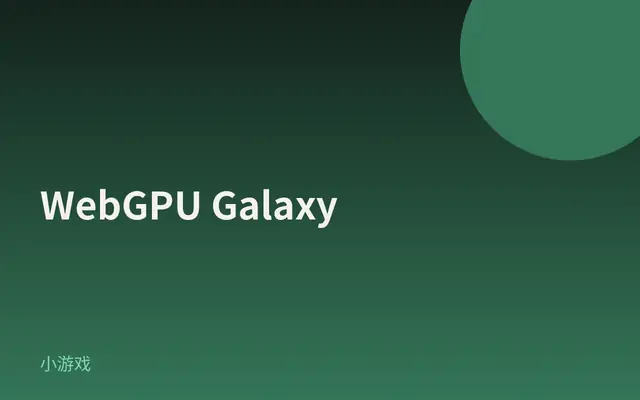

False Earth
WebGPU 程序化星球：草浪、地形与可操控角色同屏，像走进一颗假地球。
打开网站 ↗它是什么：一颗「假地球」：无尽地表、风里的草浪、可操控角色，三种相机模式来回切。
好在哪：一眼就被「能走进去的星球」抓住；草与地形在 WebGPU 上算出来，比静态酷站更像真正的世界。
怎么做到的：
- 主渲染走 Three.js r182 的 WebGPURenderer；场景挂在 React 19 + R3F Canvas 上。
- StorageBuffer + compute/TSL 在 GPU 上长出地形与草；indirect / multiDraw 撑起草海规模。
- BloomNode 晕亮部，SMAANode 收锯齿；cameraMode 在 Follow / FPV / Detached 间切换。
完整技术拆解
今日拆解 · False Earth
- Live: https://false-earth.mingjyunhung.com/
- Author: Ming Jyun Hung (momentchan)
- Source / 教程: https://tympanus.net/codrops/2026/04/21/false-earth-from-webgl-limits-to-a-webgpu-driven-world/
- Bundle: Vite 产物
./assets/index-scZJOe0j.js（HTML：type="module"+/assets/*.css） - 证据：对本页 HTML + 主 bundle（含
const FA="182"、WebGPURenderer、three.js r${FA} webgpu、MeshStandardNodeMaterial、StorageBuffer、computeAsync、BloomNode、SMAANode、@react-three/fiber、hi.version="19.2.7"、tfe.version="9.6.1"、zustand、cameraMode/FPV/Follow/Detached、drawIndirect/multiDraw、gsap.registerPlugin）的抓取核对；Codrops 教程与仓库package.json（three: ^0.182.0）作对照
为何选它
8 条里它视觉冲击最强：一片「像地球又不像地球」的无尽地表，草浪在风里动，角色可以走、相机能切跟随 / 第一人称 / 分离——不是静态酷站，而是可走进去的 WebGPU 世界。Codrops 2026-04 已把「从 WebGL 极限跳到 WebGPU」写透，比聪明但平面的作品更配今日最炫。
实际在源码里找到的技术栈
const FA="182"；data-engine 写成 `three.js r${FA} / three.js r${FA} webgpu`WebGPURendererMeshStandardNodeMaterial（含 isMeshStandardNodeMaterial）StorageBuffer 32 次——结构化数据留在 GPU 上读写compute( 36 次；computeAsync 4 次——计算着色器路径Fn( 25 次；Codrops 教程对照：颜色/深度等走 TSL 节点链drawIndirect、multiDraw——间接绘制大批量几何（教程强调草叶规模）BloomNode、SMAANode——后期 bloom + SMAAhi.version="19.2.7"（React）rendererPackageName:"@react-three/fiber"；tfe.version="9.6.1"；大量 CanvasuseStore 路径cameraMode、Follow、FPV、Detached 字面量同在gsap.registerPlugin 路径存在./assets/index-*.js 模块脚本 + 配套 CSS——典型 Vite 产物Leva / useControls 面板类名（仓库依赖有 leva，线上 minify 后未确认 UI 类名）；未找到 以 WebGLRenderer 作为主渲染器字面量；草叶 Voronoi / VAT roses 的具体算法以 Codrops 教程为准（教程细节，非全部在 bundle 里以可读公式出现）核心效果怎么工作（源码 + 标明推测）
1. WebGPU + Three.js r182 主路径（确认）
页面用 WebGPURenderer；data-engine 写成 three.js r182 webgpu。主路径不是经典 WebGLRenderer。
2. R3F + React 19 挂场景（确认）
@react-three/fiber 9.6.1 + React 19.2.7：用 Canvas 把 Three 场景嵌进 React 树；游戏状态有 zustand 痕迹。
3. StorageBuffer + compute：大地与草在 GPU 上长出来（确认类名；规模 = 教程）
StorageBuffer + compute / computeAsync 同在。Codrops 教程写明：草叶位置、风场、地形采样等走 WebGPU compute + TSL，避免 WebGL 时代的「像素打包」workaround。草叶数量与风场公式以教程为准。
4. 间接绘制撑起「一片草海」（确认符号；语义 = 教程）
drawIndirect / multiDraw 出现。教程解释：用间接绘制缓冲区告诉 GPU 画多少、从哪画——才能在可交互帧率下铺开大量草叶。
5. 后期：BloomNode + SMAANode（确认）
BloomNode 负责亮部光晕；SMAANode 做抗锯齿，远景草与地平线才不那么毛。
6. 三种相机：Follow / FPV / Detached（确认）
cameraMode 与三种模式名同在——玩家可以换「跟拍 / 第一人称 / 分离」看这颗假地球。
7. 伪代码（忠实于 bundle 符号 + 教程结构）
boot:
React 19 + R3F Canvas
renderer = WebGPURenderer # Three.js r182
store = zustand (cameraMode, …)
world (GPU):
StorageBuffer + compute/TSL Fn # 地形 / 草 / 风
multiDraw / drawIndirect # 大批量草叶
MeshStandardNodeMaterial # 表面标准光照感
post:
BloomNode
SMAANode
play:
cameraMode ∈ {Follow, FPV, Detached}
GSAP 辅助过渡（确认有 registerPlugin）对照阅读
- Codrops 全文：从 WebGL 极限到 WebGPU / TSL / 间接绘制
- 仓库：https://github.com/momentchan/false-earth（
three: ^0.182.0与线上 r182 一致）
零基础也能看懂。先认识这件作品用到的技术，再学一个知识点。
1技术栈小白版
只列拆解里在源码中确认过的技术。点开看它在这件作品里做了什么。
Three.js r182
在这件作品里整颗假地球的场景、相机和渲染管线都跑在 Three.js r182 上。
怎么认出来浏览器里能走路、切视角的实时 3D，而不是一段预渲染视频。
WebGPURenderer
在这件作品里主渲染器是 WebGPURenderer，所以大片草海还能保持可玩帧率。
怎么认出来用较新的 Chrome / Edge 打开更稳；没有适配时页面可能提示无 GPU。
StorageBuffer
在这件作品里地形 / 草等相关数据走 StorageBuffer，不必每帧从 CPU 传一整本地形。
怎么认出来世界在你走动时连续展开，而不是一卡一卡加载贴图块（观感层面）。
compute / computeAsync
在这件作品里bundle 里有 compute / computeAsync；草与地形变化主要在 GPU 侧推进。
怎么认出来草浪像被风推动，而不是整张草地贴图在晃。
BloomNode / SMAANode
在这件作品里后期用 BloomNode 提空气感，SMAANode 收远景毛刺。
怎么认出来天际与亮部有一层柔光，草叶边缘相对干净。
cameraMode Follow / FPV / Detached
在这件作品里False Earth 用 cameraMode 在 Follow / FPV / Detached 间切换。
怎么认出来同一片地表，换视角会像换了一部电影镜头。
2今日知识点
格式塔（下）：闭合、连续、图形与背景
昨天讲了接近与相似：人会把「近的、像的」收成一组。今天补另外三条常用组织律：闭合（脑会补缺口）、连续（眼会顺着线/路径走）、图形与背景（先分出「主体」和「衬底」）。
False Earth 几乎没有画死一个完整「星球模型」。地表、草、天空是碎成许多 GPU 元素的——但你仍然读成「一片完整的地」。这就是闭合：缺口与碎片会被脑补成完形。
连续在这里也很凶：你一往前走，地平线与草浪顺着运动方向延伸，眼会跟着路径走，而不是把每一根草当成独立噪音。相机从 Follow 切到 FPV，连续感还会从「旁观一条路」变成「自己踩在路上」。
图形与背景：角色 / 可走区域是图形，无尽地表与天空是背景。设计上若图形与背景对比不够（颜色、运动、清晰度都糊在一起），人就会「找不到我该看哪」。False Earth 用可操控角色 + 草浪尺度差，把图形从背景里抠出来。
今日口诀：补全、顺着看、分出前后。做界面时问：缺口要不要让人脑补？视线有没有一条连续路径？谁是图形、谁是背景？
它从哪里来
格式塔组织律在 20 世纪初由韦特海默等人系统化；闭合、连续、图形—背景与接近、相似常一起出现在设计教材里。
平面设计里：残缺的 logo 仍能被认出，靠的是闭合；杂志排版用对齐与引导线制造连续；海报先决定「谁是主体」。
到了实时 3D / 游戏，这三条仍然管用：关卡设计师用路径连续引导玩家；美术用明暗和景深拉开图形与背景；程序化世界更依赖闭合——碎片几何仍要读成「一整片地」。
False Earth 是 2026 的 WebGPU 作品，但你秒懂「这是地表、那是天空、我可以往前走」，靠的仍是这些更早被写清的视知觉规律。
经典参考
- Interaction Design Foundation · Gestalt Principles用图示复习闭合、连续、图形与背景；接续昨天的接近与相似。
- Codrops · False Earth: From WebGL Limits to a WebGPU-Driven World看作者如何用 GPU 草海与间接绘制撑起「一整片地」——技术服务于完形。
- Max Wertheimer · 格式塔组织律脉络知道闭合/连续/图形—背景的来源即可；不必啃德文原典。
- 打开 False Earth，先静止看 3 秒：你先分出的「图形」是角色、地平线，还是草的纹理？写下一句。
- 往前走几步：视线是顺着路径连续往前，还是在草叶间跳跃？用「连续」评价一句。
- 想象把角色衣服做成和草地几乎同色、同亮度——图形还在吗？用「图形与背景」写一条失败原因。
- 看任意一个 App 启动页：有没有用闭合（残缺图标仍可读）或连续（引导线/步骤条）？各举一例或写「没有」。
小词典
- 闭合（Closure）
- 图形有缺口时，大脑仍倾向把它补成完整形状。
- 连续（Continuity）
- 眼睛喜欢顺着平滑的线或路径看，而不是任意折来折去。
- 图形与背景（Figure–Ground）
- 感知时先分出「主体（图形）」和「衬底（背景）」。
- WebGPU
- 浏览器里较新的图形接口，更适合在显卡上做大规模计算再绘制。
- 程序化（Procedural）
- 不靠一张张手绘完整地图，而用规则/算法在运行时生成内容。
3知识地图进度







设计雷达 · 每天 8 个值得看的网站、App UI 和网页小游戏